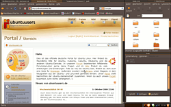
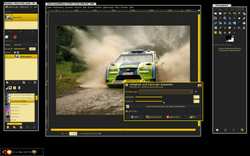
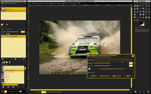
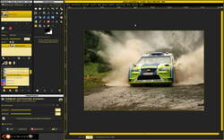

Ion3
Archivierte Anleitung
Dieser Artikel wurde archiviert, da er - oder Teile daraus - nur noch unter einer älteren Ubuntu-Version nutzbar ist. Diese Anleitung wird vom Wiki-Team weder auf Richtigkeit überprüft noch anderweitig gepflegt. Zusätzlich wurde der Artikel für weitere Änderungen gesperrt.
Anmerkung: Die Entwicklung von Ion3 wurde eingestellt. Alternativen sind im Artikel Fenstermanager zu finden.
Artikel für fortgeschrittene Anwender
Dieser Artikel erfordert mehr Erfahrung im Umgang mit Linux und ist daher nur für fortgeschrittene Benutzer gedacht.
Zum Verständnis dieses Artikels sind folgende Seiten hilfreich:
Ion3  ist ein tiling-fähiger Fenstermanager für Fortgeschrittene, der sich gut in GNOME integrieren und sich fast komplett mit der Tastatur steuern lässt. Ion3 arbeitet im aufgeteilten ("tiled") Modus mit Rahmen ("Frames"), in die sich Xclients (die grafische Ausgabe von Anwendungen) ablegen lassen. Enthält ein Frame mehrere Xclients, werden diese in Form von Tabs am oberen Rand dargestellt. Zusätzlich gibt es noch den Vollbild- und den schwebenden ("floating ") Modus, bei dem die Xclients mit der Maus frei bewegt werden können.
ist ein tiling-fähiger Fenstermanager für Fortgeschrittene, der sich gut in GNOME integrieren und sich fast komplett mit der Tastatur steuern lässt. Ion3 arbeitet im aufgeteilten ("tiled") Modus mit Rahmen ("Frames"), in die sich Xclients (die grafische Ausgabe von Anwendungen) ablegen lassen. Enthält ein Frame mehrere Xclients, werden diese in Form von Tabs am oberen Rand dargestellt. Zusätzlich gibt es noch den Vollbild- und den schwebenden ("floating ") Modus, bei dem die Xclients mit der Maus frei bewegt werden können.
Der Programmautor Tuomo Valkonen hat die Weiterentwicklung 2009 nach knapp 10 Jahren eingestellt und widmet sich laut eigener Aussage inzwischen interessanteren Dingen. Es gibt eine Weiterführung durch die Community unter dem Namen Notion .
Installation¶
|  |
| GNOME mit Ion3 |
Ion3 kann über die Paketverwaltung bis einschließlich Ubuntu 10.10 mit Hilfe folgenden Paketes installiert werden [1]:
ion3 (universe [2])
 mit apturl
mit apturl
Paketliste zum Kopieren:
sudo apt-get install ion3
sudo aptitude install ion3
Aus dem Quellcode kompilieren¶
Alternativ kann man die aktuelle Version von Ion3 (die oft nicht über die Paketverwaltung erhältlich ist) aus dem Quellcode kompilieren. Dazu muss man neben der in [3] erwähnten Pakete noch
lua5.1 (universe )
liblua5.1-0 (universe)
liblua5.1-0-dev (universe)
libx11-dev
x11proto-xext-dev
libsm-dev
mit apturl
Paketliste zum Kopieren:
sudo apt-get install lua5.1 liblua5.1-0 liblua5.1-0-dev libx11-dev x11proto-xext-dev libsm-dev
sudo aptitude install lua5.1 liblua5.1-0 liblua5.1-0-dev libx11-dev x11proto-xext-dev libsm-dev
installieren [1].
Von der Projektseite kann der Fenstermanager als Archiv heruntergeladen und entpackt [4] werden. Vor der Installation muss noch die Datei system.mk geändert werden [5]:
# If you have installed Lua 5.1 from the official tarball without changing # paths, this should do it. LUA_DIR=/usr/local LUA_LIBS = -L$(LUA_DIR)/lib -llua LUA_INCLUDES = -I$(LUA_DIR)/include LUA=$(LUA_DIR)/bin/lua LUAC=$(LUA_DIR)/bin/luac # If you are using the Debian packages, the following settings should be # what you want. #LUA_LIBS=`pkg-config --libs lua5.1` #LUA_INCLUDES=`pkg-config --cflags lua5.1` #LUA=/usr/bin/lua5.1 #LUAC=/usr/bin/luac5.1
zu
# If you have installed Lua 5.1 from the official tarball without changing # paths, this should do it. #LUA_DIR=/usr/local #LUA_LIBS = -L$(LUA_DIR)/lib -llua #LUA_INCLUDES = -I$(LUA_DIR)/include #LUA=$(LUA_DIR)/bin/lua #LUAC=$(LUA_DIR)/bin/luac # If you are using the Debian packages, the following settings should be # what you want. LUA_LIBS=`pkg-config --libs lua5.1` LUA_INCLUDES=`pkg-config --cflags lua5.1` LUA=/usr/bin/lua5.1 LUAC=/usr/bin/luac5.1
Danach kompiliert/installiert das Programm, aber ohne Aufruf von ./configure [3].
Wenn man Ion3 aus den Paketquellen installiert hat, kann man ihn jetzt schon benutzen, indem man beim Anmeldebildschirm "Einstellungen -> Sitzung wählen -> Ion3" auswählt. Hat man Ion3 selbst kompiliert und will ihn ohne GNOME einsetzen, findet man unter [6] eine Anleitung dazu. Wer aber auf nicht auf das gewohnte "Look'n'Feel" von Ubuntu verzichten will und eigentlich auch jeder andere, der in den vollen Genuss von Ion3 kommen will, muss noch einiges anpassen.
Benutzung¶
Die wichtigsten Tastenkürzel¶
| Tastenkürzel | Wirkung |
| Alt + F9 | neuen Workspace erstellen |
| Alt + 0 bis 9 | zu den Workspaces springen |
| Alt + , / . | zum vorigen/nächsten Workspace springen |
| Alt + Tab ⇆ / P / N | zum Frame rechts/oben/unten vom aktuellen |
| Alt + K + N / P | zum nächsten / vorigen Tab innerhalb des Frames |
| Alt + K K | zu Anwendung, die Aufmerksamkeit verlangt |
| Alt + S | Frame vertikal aufteilen |
| Alt + K + S | Frame horizontal aufteilen |
| Alt + H / V | Frame horizontal / vertikal maximieren |
| Alt + ⏎ | Vollbildmodus für aktuelle Anwendung umschalten |
| Alt + A | Frame in vorhandenes Tiling einbinden |
| Alt + K + B | Frame in neues Tiling einbinden |
| Alt + K + R | ausgewählen Frame nach vorne holen |
| Alt + R | Größenänderungsmodus |
| ⏎ | Größenänderungsmodus verlassen |
| nichts / ⇧ / Alt + B / F / P / N | vergrößern / schrumpfen / bewegen nach rechts / links / oben / unten im Größenänderungsmodus |
| Alt + [linke Maustaste auf Tab] | Frame verschieben |
| [linke Maustaste auf Rand] oder Alt + [rechte Maustaste auf Tab] | Größe des Frames ändern |
| Alt + C | markierte Anwendung schließen |
| Alt + K + C | Beenden der markierten Anwendung erzwingen ("kill") |
| F2 | Xterm starten |
| F3 | Startmenü |
| F9 | Workspace-Abfrage (siehe Layouts) |
| F12 | Ion3 Hauptmenü |
| Alt + G | Liste aller Fenster anzeigen |
Wem diese Tastenbelegung zu umständlich ist, der findet unter "Alternative Tastenbelegung" Konfigurationsdateien mit einer einfacheren Tastenbelegung.
Programme starten¶
Mit F3 kann man ein Startmenü aufrufen, in dem man den Namen eines Programms eingeben kann. Dabei zeigt eine Liste alle passenden, vorhandenen Programme an. Die Einträge kann man mit F3 anwählen, mit ⏎ wird ein Programm gestartet. Man kann Programmen auch eigene Tastenkürzel zum Starten zuweisen. Wer Programme wie von Ubuntu gewohnt starten möchte, findet bei GNOME-Panel einbinden Rat.
Konfiguration¶
Die Konfigurationsmöglichkeiten von Ion3 sind sehr mächtig und erst ein auf die eigenen Bedürfnisse und Vorlieben angepasstes Ion3 ist richtig komfortabel. Anwendugsspezifische Einstellungen sind für die meisten Programme nicht nötig. Es gibt jedoch einige Programme, bei denen sich die Fenster sehr speziell verhalten. Ein Beispiel dafür ist GIMP. Durch die vielen Dialoge wird das Arbeiten mit den Standardeinstellungen zur Qual. Mit ein wenig Feintuning allerdings kann man sich meist auch mit solchen Programmen die Vorteile eines Tiling-Fenstermanagers zunutze machen. Im Folgenden werden Beispiele stets anhand von GIMP gegeben, sodass nebenbei mehrere Möglichkeiten der Konfiguration von Ion3 speziell im Bezug auf GIMP aufgezeigt werden.
Kopieren der Konfigurationsdateien¶
Bevor man mit der Konfiguration beginnt, sollte man den Ordner .ion3 in seinem Homeverzeichnis erstellen und alle Dateien (Ion's Konfigurationsdateien) aus dem Ordner /etc/X11/ion3 (Installation aus Paketquellen) oder /usr/local/etc/ion3 (Ion3 selbst kompiliert) hier hineinkopieren. In diesem Ordner kann man jetzt die Konfiguration für den jeweiligen Benutzer vornehmen. Wenn man die Konfiguration gleich für alle Benutzer ändern will, sollte man die Dateien nicht kopieren, sondern in ihren ursprünglichen Ordnern ändern.
Eigenes Startlayout einrichten¶
Ion3 merkt sich die Positionen alle Workspaces und Frames beim Ausloggen aus der Sitzung und zwar je nachdem, ob man Ion3 alleine oder in GNOME betreibt in der Datei ~/.ion3/default-session--0/saved_layout.lua oder ~/.ion3/gnome-session-Default/saved_layout.lua. Wenn man sich seine Workspaces und Frames nach seinen Vorlieben einrichtet, sich einmal aus- und wieder einloggt und dann den Schreibzugriff auf diese Datei unterbindet [8], startet Ion3 von da an immer mit diesem Layout. In dieser Datei kann man den Workspaces und Frames auch Namen geben. Das hat den Vorteil, dass man im nächsten Abschnitt Anwendungen sagen kann, wo sie geöffnet werden sollen. Workspaces heißen ursprünglich "WGroupWS", "WGroupWS<1>" usw., Frames "WFrame", "WFrame<1>"... . Diese kann man in den Zeilen, die
["name"] =
enthalten, festlegen. Weiterhin kann man einen Workspace ohne Frames für schwebende Fenster bereitzustellen. Hier ist eine Beispieldatei, die folgende drei Workspaces enthält:
web mit den Frames webbig, gaim1 und gaim2
etc mit den Frames etcbig, etc1 und etc2
float ohne Frames, für schwebende Fenster
In Ubuntu 8.10 wird das Layout nicht mehr am Ende einer GNOME-Session gespeichert. Wer ein gespeichertes Layout beim Start jeder GNOME-Session laden lassen möchte, muss sich eine gültige saved_layout.lua in den Ordner ~/.ion3/gnome-session-this-is-deprecated/ kopieren. Eine entsprechende Datei wird in dem Ordner ~/.ion3/default-session--0/ erstellt, wenn man im GDM eine reine Ion3-Session startet, sich das Layout seinen Wünschen entsprechend einrichtet und die Session wieder beendet.
Fensterspezifische Einstellungen (Winprops)¶
Um Einstellungen für einzelne Fenster (sogenannte "Winprops") zu erstellen, muss man "class" und gegebenenfalls "role" und "instance" eines Fensters/Programmes kennen. Um diese herauszubekommen, klickt man mit der rechten Maustaste auf das Tab eines Fensters und wählt "Window info". Es erscheinen die gewünschten Informationen. Bei GIMP kann man zum Beispiel anhand der "roles" "gimp-toolbox" und "gimp-image-window" den Werkzeugkasten vom Bildfenster unterscheiden. Diese Namen können sich bei neuen Programmversionen ändern. Dies sollte man bei Software- und insbesondere Distributions-Upgrades beachten. Als Beispiel erstellen wir ein Winprop für GIMP, damit es schwebend und auf dem Workspace "float" gestartet wird. Dazu muss man lediglich folgende Zeilen in die Datei cfg_kludges.lua einfügen [2]:
|  |
| alle GIMP-Fenster schweben |
defwinprop{
class = "Gimp",
instance = "gimp",
target = "float",
float = true
}Mit einem entsprechenden Abschnitt mit target = "Ort" kann man Anwendungen auch an jedem anderen Ort starten lassen, sofern man den Namen des Ortes (der im Startlayout oder einem selbst definierten Layout definiert wird) kennt.
Damit wird GIMP benutzbar, der geneigte Leser wird jedoch bemängeln, dass man die Fenster selbst positionieren muss und dass Platz verschwendet wird.
Eine andere Möglichkeit ist daher, die drei Hauptfenster von GIMP in drei Tiling-Rahmen zu organisieren und die vielen kleinen Dialoge darüber schweben zu lassen. Dazu verwendet man folgende Winprops:
|  |
| GIMP mit schwebenden Dialogen |
defwinprop{
class = "Gimp-2.6",
float = true
}
defwinprop{
class = "Gimp-2.6",
role = "gimp-toolbox",
}
defwinprop{
class = "Gimp-2.6",
role = "gimp-image-window"
}
defwinprop{
class = "Gimp-2.6",
role = "gimp-dock"
}
defwinprop{
class = "Gimp-2.6",
role = "gimp-startup",
}Die erste versetzt alle GIMP-Fenster in den float-Modus, die anderen heben dies für einige Spezialfälle wieder auf.
Layouts¶
Durch die Tastenkombination Alt + F9 erzeugt man einen neuen, horizontal in zwei Frames aufgeteilten Workspace. Die Taste F9 alleine gedrückt ruft dagegen eine Abfrage auf, bei der man durch Angabe eines Namens und eines Layouts einen neuen Workspace erstellen kann. Die möglichen Layouts sind in der Konfigurationsdatei cfg_layouts.lua definiert. Hier kann man natürlich auch nach Belieben eigene Layouts definieren.
Hierfür sind bereits Programmierkenntnisse von Vorteil. Man kann aber ein wenig bei den bereits vorhandenen Layouts abschauen. Folgendes Layout bewirkt z.B. ein Tiling mit horizontaler Aufteilung, bei dem der rechte Frame zusätzlich vertikal aufgeteilt wird (wie auf dem Bildschirmfoto am Anfang des Artikels):
ioncore.deflayout("1x2",
mktiling(mksplit("horizontal",
a_frame,
mksplit("vertical", a_frame, a_frame))
)
)a_frame steht dabei Synonym für
{
type="WSplitRegion",
regparams = {
type = "WFrame",
frame_style = "frame-tiled"
}
}Als nächsten Beispiel wird dies ausgeschrieben, um ein Layout mit benannten Frames zu erstellen. Es wird ein Layout wie das auf dem Bildschirmfoto rechts für GIMP erstellt, indem folgender Code, in der Datei cfg_layouts.lua eingefügt wird:
|  |
| GIMP mit eigenem Layout |
-- Gimp-Layout
ioncore.deflayout("gimp",
mktiling(mksplit("horizontal",
mksplit("vertical",
mksplit("horizontal", {
type="WSplitRegion",
regparams = {
type = "WFrame",
name = "g-dock",
frame_style = "frame-tiled"
}
}, {
type="WSplitRegion",
regparams = {
type = "WFrame",
name = "g-toolbox",
frame_style = "frame-tiled"
}
}),
{
type="WSplitRegion",
regparams = {
type = "WFrame",
name = "g-dialogues",
frame_style = "frame-tiled"
}
}),
{
type="WSplitRegion",
regparams = {
type = "WFrame",
name = "g-image-window",
frame_style = "frame-tiled"
}
})
)
)Dadurch, dass den Frames feste Namen zugeordnet sind, kann man mit Hilfe von Winprops einzelnen Anwendungsfenstern sagen, in welchem Frame sie erscheinen sollen. Dazu darf man das Layout allerdings nicht für mehrere Workspaces gleichzeitig nutzen, da es jeden Namen nur einmal geben darf.
In dem Beispiel werden jetzt folgende Winprops genutzt, um jedem GIMP-Fenster seinen Platz zuzuordnen:
defwinprop{
class = "Gimp-2.6",
target = "g-dialogues"
}
defwinprop{
class = "Gimp-2.6",
role = "gimp-toolbox",
target = "g-toolbox"
}
defwinprop{
class = "Gimp-2.6",
role = "gimp-image-window",
target = "g-image-window"
}
defwinprop{
class = "Gimp-2.6",
role = "gimp-dock",
target = "g-dock"
}
defwinprop{
class = "Gimp-2.6",
role = "gimp-startup",
target = "gimp",
new_group = "gimp"
}
defwinprop{
class = "Gimp-2.6",
role = "gimp-file-save",
target = "g-image-window"
}
defwinprop{
class = "Gimp-2.6",
role = "gimp-file-open",
target = "g-image-window"
}Dabei werden durch den ersten Winprop alle Fenster, die nicht aufgeführt sind (also die zahlreichen Dialoge) im Frame unten links dargestellt. Werkzeugkasten und Dock kommen in die beiden Frames oben links, Bildfenster und die beiden großen Dialoge "Datei öffnen" und "Datei speichern" in den großen Frame rechts.
Im Winprop für "gimp-startup" (GIMPs Ladefenster) wird durch die Angabe des Layoutnamens als target und new_group festgelegt, dass es im Workspace "gimp" erscheinen soll und diesen, falls nicht vorhanden, mit dem Layout "gimp" neu erstellt.
Das bedeutet also: Beim Starten von GIMP wird ein neuer Workspace mit dem gewünschten Layout erstellt und jedes GIMP-Fenster hat seinen festen Platz, an dem es dargestellt wird, ohne irgendein anderes Fenster zu überlappen. Das heißt natürlich nicht, dass man beim Arbeiten nicht beispielsweise den Frame "g-image-window" (rechts) weiter aufteilen kann, um mehrere Bilder nebeneinander anzuzeigen.
Wenn man das Erstellen von eigenen Layouts einmal beherrscht, ist es verglichen mit einem eigenen Startlayout der wesentlich elegantere Weg, da die Workspaces erst beim Starten eines Programmes erzeugt werden und vorher nicht stören. Außerdem kann man so auch bei der Verwendung mehrerer XServer Winprops mit Targets verwenden, ohne das dadurch festgelegt wird, auf welchem XServer man betreffende Anwendung starten muss. (Wenn man nur ein Startlayout verwendet, legt man damit die Namen der Frames schon fest.)
Alternative Tastenbelegung¶
Die Standardmäßige Tastenbelegung ist schwer zu merken und einige Tastenkombinationen sind mit einer Hand kaum zu bewerkstelligen. Darum gibt es hier (cfg_ioncore.lua, cfg_tiling.lua) Konfigurationsdateien mit einer alternativen Tastenbelegung, bei der sich alle wichtigen Befehle bequem mit der linken Hand ausführen lassen.
Das sind die wichtigsten Tastenkürzel der alternativen Belegung:
| Tastenkürzel | Wirkung |
| Alt + F9 | neuen Workspace erstellen |
| Alt + 0 bis 9 | zu den Workspaces springen |
| Alt + A / X | zum vorigen/nächsten Workspace springen |
| Alt + Tab ⇆ / S / Y | zum Frame rechts/oben/unten vom aktuellen |
| Alt + Windows + X / A | zum nächsten / vorigen Tab innerhalb des Frames |
| Alt + Windows Windows | zu Anwendung, die Aufmerksamkeit verlangt |
| Alt + W | Frame vertikal aufteilen |
| Alt + D | Frame horizontal aufteilen |
| Alt + H / V | Frame horizontal / vertikal maximieren |
| Alt + B | Vollbildmodus für aktuelle Anwendung umschalten |
| Alt + E | Frame in vorhandenes Tiling einbinden |
| Alt + Windows + X | Frame in neues Tiling einbinden |
| Alt + Windows + R | ausgewählen Frame nach vorne holen |
| Alt + R | Größenänderungsmodus |
| ⏎ oder R | Größenänderungsmodus verlassen |
| nichts / ⇧ / Alt + X / A / S / Y | vergrößern / schrumpfen / bewegen nach rechts / links / oben / unten im Größenänderungsmodus |
| Alt + [linke Maustaste auf Tab] | Frame verschieben |
| [linke Maustaste auf Rand] oder Alt + [rechte Maustaste auf Tab] | Größe des Frames ändern |
| Alt + C | markierte Anwendung schließen |
| Alt + Windows + C | Beenden der markierten Anwendung erzwingen ("kill") |
| F2 | Xterm starten |
| F3 | Startmenü |
| F9 | Workspace-Abfrage (siehe Layouts) |
| F12 | Ion3 Hauptmenü |
| Alt + G | Liste aller Fenster anzeigen |
Natürlich kann man die Tastenkürzel auch seinen eigenen Bedürfnissen anpassen. Die meisten Tastenbelegungen werden in der Datei cfg_ioncore.lua und einige weitere in cfg_tiling.lua eingestellt. Die Dateien sind selbsterklärend. Man muss nur die Tasten ändern oder um eine Tastenkombination zu deaktivieren, die Zeilen auskommentieren, was in Lua mit einem -- am Anfang einer Zeile geht. Wenn man bei einer Taste nicht weiß, wie sie heißt, hilft xev (im Terminal [7]). Xmodmap kann ebenfalls hilfreich sein. "META" ist normalerweise Alt .
Aussehen¶
Man kann das Aussehen von Ion3 mit Stilen (styles) verändern. Dazu drückt man mehrmals F12 , bis im Hauptmenü ein Stil ausgewählt ist, zum Beispiel styles/look_cleanios. Dann drückt man ⏎ . Man kann durch das Erstellen entsprechender Dateien in ~/.ion3 auch eigene Stile erstellen. Den farblich an das Gnome-Theme "DarkRoom" angepassten Stil aus dem Bildschirmfoto oben gibt es hier zum downloaden.
Tipps¶
Integration in GNOME¶
Zuerst muss der GNOME-Desktop deaktiviert werden. Dazu nimmt man im Konfigurationseditor [9] unter "apps -> nautilus -> preferences -> show_desktop" das Häkchen raus.
Dann integriert man Ion3 wie unter [10] beschrieben in GNOME. Dabei ist gegebenenfalls der Abschnitt "GNOME-Splash-Screen wird sehr lange angezeigt" zu beachten.
GNOME-Panel einbinden¶
Standardmäßig bringt Ion3 eine eigene Statusbar mit, die man aber durch den GNOME-Panel ersetzen kann. Dazu startet man GNOME am besten noch einmal mit Metacity und richtet sich ein Panel am unteren Bildschirmrand ein, in das man alles packt, was man benötigt, allerdings keine Fensterliste. Die braucht man mit Ion3 nicht und sie funktioniert auch nicht. Andere Panels werden gegebenenfalls gelöscht. Das verbleibende Panel klickt man mit rechts an und wählt "Eigenschaften". Im erscheinenden Dialog wählt man unter Ausrichtung "Unten". "Auto-Verbergen" sollte deaktiviert sein (es funktioniert mit Ion3 nicht), "Ausdehnen" sollte um Platz zu sparen ebenfalls deaktiviert sein. Später kann das Panel auch unter Ion3 bearbeitet werden.
Nun müssen folgende Stellen in folgenden Konfigurationsdateien verändert werden:
| vorher | nachher |
| cfg_defaults.lua: | |
| dopath("mod_statusbar") | --dopath("mod_statusbar") |
| --dopath("mod_dock") | dopath("mod_dock") |
| cfg_dock.lua: | |
| mode="floating", | mode="embedded", |
| wenn das Panel unten rechts statt links sein soll außerdem: | |
| pos="bl", | pos="br", |
| grow="right", | grow="left", |
Zudem muss in die Datei cfg_kludges.lua folgender Winprop definiert werden:
defwinprop{
class="Gnome-panel",
instance="gnome-panel",
target="dock"
}Frames durchsichtig machen, damit das GNOME-Hintergrundbild zu sehen ist¶
Zuerst muss man wissen, welchen Stil man verwendet (Stil auswählen), da diese Einstellung für jeden Stil einzeln gesetzt werden muss. Dann fügt man in der entsprechenden Konfigurationsdatei (z.B. look_cleanios.lua) in der Rubrik de.defstyle("*", die Zeile
transparent_background = true,
ein. Falls vorhanden, muss dieser Wert auch in der Rubrik de.defstyle("frame", auf true gesetzt werden.
Beispiel:
de.defstyle("*", {
transparent_background = true,
shadow_colour = "#ffffff",
...
})
de.defstyle("frame", {
background_colour = "#000000",
transparent_background = true,
})Allgemeine Tipps¶
Den Pfad erweitern, damit F3 mit eigenen Befehlen funktioniert¶
Der Einsatz von Ion3 lohnt sich besonders, wenn sich die Liste der Befehle, die man mit
F3 erhält, leicht erweitern lässt. Dies ist jedem Benutzer möglich, indem
er seine PATH-Variable z.B. um den Pfad ~/bin erweitert. Damit Ion3 davon
auch etwas mitbekommt, muss dies in der Datei ~/.profile geschehen (nicht in
der .bashrc)! Folgende Zeilen fügen der PATH-Umgebungsvariable den Ordner bin im Homeverzeichnis des Benutzers hinzu:
# set PATH so it includes user's private bin if it exists
if [ -d "$HOME/bin" ] ; then
PATH="$HOME/bin:$PATH"
fiWenn man nun den Ordner ~/bin erstellt und mit eigenen Shell-Skripten füllt, wird Ion3 diese Skripte als Befehle anbieten.
Hinweis: Damit die Skripte in die Liste der Befehle aufgenommen werden, müssen sie mit
chmod u+x <shell-skript-name>
ausführbar gemacht werden.
- Erstellt mit Inyoka
-
 2004 – 2017 ubuntuusers.de • Einige Rechte vorbehalten
2004 – 2017 ubuntuusers.de • Einige Rechte vorbehalten
Lizenz • Kontakt • Datenschutz • Impressum • Serverstatus -
Serverhousing gespendet von